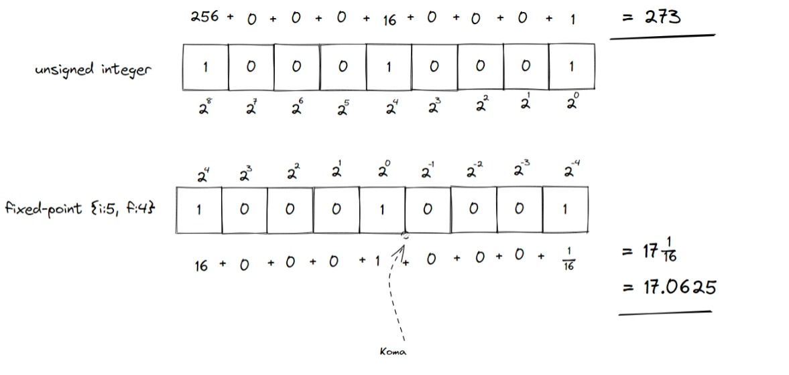

Perdebatan tentang kualitas audio digital sudah dimulai sejak munculnya rekaman digital itu sendiri, sekitar 1970an. Fast forward ke awal-90an, dominasi rekaman analog mulai tergantikan oleh rekaman digital berbentuk CD sejak perkenalannya di pertengahan 80an (dilansir dari RIAA). Rekaman analog kemudian tidak pernah bersinar kembali terhadap rekaman digital yang berubah-ubah bentuk: CD digantikan oleh download sejak akhir 2000an, dan kemudian layanan streaming mulai menguasai pasar (juga overall mendorong industri musik) sejak pertengahan 2010an.
Menariknya, perdebatan tidak berhenti disitu saja, tetapi dengan fleksibilitas dan kebebasan dunia digital membuat representasi musik menjadi sangat beragam, salah satunya terkait format de facto dalam rekaman, sama-sama mengakui WAV sebagai format terbaik, tetapi sebagian menyatakan bahwa 24-bit integer sudah mencukupi untuk kebutuhan rekaman dengan kualitas tinggi, sementara sebagian yang lain berkata bahwa 32-bit floating-point adalah format minimal dalam rekaman profesional.
Benarkah hal tersebut? Seberapa jauh perbedaan kualitas antara 24-bit integer dengan 32-bit floating-point?
Penulis akan mencoba membahas tentang hal ini dalam dua artikel. Artikel pertama ini terkait tentang integer dan floating-point itu sendiri, tetapi jika ternyata sudah familiar dengan seluk-beluk kedua hal tersebut, pembaca dapat langsung membaca analisis di bagian kedua.
Integer dan floating-point. Sebagai musisi atau produser musik modern, kedua istilah itu bisa dibilang berlalu lalang di telinga kita setiap harinya. Dan sebagai artis, kita cenderung take it for granted, “menerima saja”, kedua istilah tersebut. Sebagian yang pernah membaca atau berlatar belakang dunia IT mungkin akan mengatakan bahwa itu adalah “tipe data”. Anda benar, dan tipe data sendiri adalah “format” atau sederhananya bagaimana data disusun dan dipahami oleh komputer.
Sekilas, tipe integer hanya mampu menyimpan data berbentuk bilangan bulat (\(...\), \(-3\), \(-2\), \(-1\), \(0\), \(1\), \(2\), \(3\), \(...\)) sementara floating point dapat menyimpan bilangan desimal (seperti \(3.14...\) atau \(0.125\)).
Integer
Integer (int) atau bilangan bulat ( simbol matematika \(\mathbb{Z}\) ) bekerja persis seperti bilangan yang kita gunakan sehari-hari, misalkan \(273\):
\[ \begin{aligned} 273 &= 2\cdot100 &&+7\cdot10 &&+3\cdot1\\ &= 2\cdot10^2 &&+7\cdot10^1 &&+3\cdot10^0\\ &= 273 \end{aligned} \]
Komputer, alih-alih menggunakan sistem desimal yang menggunakan 10 angka berbeda (\(0-9\)), efektif menggunakan hanya 2 angka (\(0\) dan \(1\)) yang disebut dengan sistem biner (binary):
\[ \begin{aligned} 100010001 &= 1\cdot2^8&&+1\cdot2^4&&+1\cdot2^0\\ &= 256 &&+ 16 &&+ 1\\ &= 273 \end{aligned} \]
Bilangan dengan sistem-sistem berbeda dapat dinotasikan dengan \(N_b\) dengan \(b\) sebagai basisnya: \(2\) untuk biner, \(10\) untuk desimal. Selain itu dalam komputer juga sering digunakan sistem oktal dengan basis \(8\) dan heksadesimal dengan basis \(16\).
Maka \(273_{10} = 100010001_2\).
Bit
Setiap angka pada bilangan biner disebut dengen bit, sebagai contoh 100010001 memiliki \(9\) bit.
Tidak seperti manusia yang dapat menggunakan angka sebebasnya, komputer harus mengalokasikan jumlah bit sebelum dapat melakukan suatu operasi. Misal, pada data 32-bit, data-data hingga dengan lebar hingga 32-bit dapat dioperasikan secara valid, tetapi akan terjadi error atau overflow1 ketika digunakan untuk mengoperasikan data dengan jumlah bit lebih lebar.
Hal ini membuat besar data yang disimpan oleh suatu tipe terbatas, misalnya bilangan 32-bit hanya dapat menyimpan \(2^{32}\) bilangan berbeda (dari \(0\) hingga \(4\;294\;967\;295\)).
Sign
Lalu bagaimana dengan bagian negatif dari integer? Komputer hanya memahami \(0\) dan \(1\), tidak ada angka, simbol, objek, atau apa pun selain kedua nilai tersebut, termasuk tanda negatif (\(-\)). Lalu bagaimana menyiasatinya? Untuk itu digunakan MSB (Most Significant Bit), sederhananya bit paling kiri pada sebuah bilangan digunakan sebagai penanda: 0 sebagai \(+\) dan 1 sebagai \(-\). Sebagai contoh, 100010001 diatas dapat dibaca sebagai \(273\) jika dibaca sebagai unsigned (tanpa menggunakan MSB sebagai penanda), tetapi akan terbaca sebagai -00010001 (\(17_{10}\)) jika menggunakan tipe data signed.
Pada praktiknya, hanya menggunakan MSB secara langsung membuat munculnya dua bilangan berbeda untuk merepresentasikan \(0\), yaitu \(-0\) (contoh 8-bit: 10000000) dan \(+0\) (00000000).
Sehingga cara yang lebih umum untuk perepresentasikan bilangan negatif secara biner adalah metode [2s complement](https://www.cs.cornell.edu/~tomf/notes/cps104/twoscomp.html
Integer sebagai bentuk data paling sederhana memiliki variasi fungsi bermacam pada komputer. Berdasarkan lebarnya (pada sebuah mesin x86 tipikal), diantaranya ialah:
- 8-bit: menyimpan karakter (ASCII) dan simbol (
'A','z','#'), biasa dilambangkan dengancharatauu8. - 16-bit: biasa dilambangkan sebagai
short, tidak memiliki kegunaan khusus. - 32-bit:
intbentuk integer paling umum digunakan. Dapat juga digunakan untuk karakter Unicode. - 64-bit:
long(danlong long)
Floating-Point
Kelemahan terbesar dari representasi int ialah bahwa tipe tersebut hanya mampu menyimpan bilangan bulat. Bagaimana jika dibutuhkan presisi yang lebih tinggi? Bagaimana jika hasil operasi bukanlah bilangan bulat?
Ketika solusi pembulatan tidak dapat diterima, maka dibutuhkan bentuk representasi biner lainnya untuk bilangan yang lebih luas dari bilangan bulat, yaitu bilangan riil (simbol matematika \(\mathbb{R}\)), yang mencakup bilangan rasional dan irrasional. Selain membatasi range representasi seperti halnya tipe int, batasan jumlah bit nantinya juga akan membatasi akurasi/presisi representasi ini. Hal ini akan lebih jelas kemudian.
Para ahli komputer terdahulu memberikan dua bentuk representasi bilangan riil dalam bentuk biner: fixed-point dan floating-point.
Fixed Sebagai Pendahulu Floating

Coretan di atas mengilustrasikan bahwa fixed-point, yang muncul lebih dahulu dari pada floating-point, sederhananya bisa disebut sebagai modifikasi dari bentuk integer: sebagian digit dijadikan representasi integer/bilangan bulat, sisanya menjadi pecahan. Pada dasarnya, fixed-point bekerja dengan cara yang serupa dengan bilangan desimal:
\[ \begin{aligned} 1998 &= 1\cdot1000&&+9\cdot100&&+9\cdot10&&+8\cdot1\\ &= 1\cdot10^3&&+9\cdot10^2&&+9\cdot10^1&&+8\cdot1^0\\ 19.98 &= 1\cdot10&&+9\cdot1&&+9\cdot\frac{1}{10}&&+8\cdot\frac{1}{100}\\ &= 1\cdot10^1&&+9\cdot10^0&&+9\cdot10^{-1}&&+8\cdot1^{-2}\\ &= 10&&+9&&+0.9&&+0.08\\ \end{aligned} \]
Sebagai contoh, pada coretan di atas, 100010001 dapat dibaca sebagai \(273\) dengan tipe unsigned integer. Tetapi ketika data tersebut dibaca sebagai data fixed-point dengan 5 digit terbesar sebagai unsigned integer dan 4 digit terkecil sebagai pecahan (10001.0001), bilangan tersebut dibaca \(17\frac{1}{16}\) atau \(17.0625\). Posisi integer-pecahan yang tetap ini yang memberikan “fixed” pada fixed-point.
Floating Menggantikan Fixed
Floating-point muncul sebagai alternatif untuk fixed-point, dengan kelebihan:
- Informasi tipe yang lebih sederhana karena tidak perlu menunjukkan posisi koma.
- Posisi koma (point) yang dapat berpindah-pindah (floating) sehingga sistem ini dapat mencakup range yang jauh lebih luas dan presisi yang variatif2.
- Terstandardisasi, yang berarti tipe ini portabel: setiap komputer memahami tipe data ini dengan cara yang sama. Hal ini adalah aspek penting dalam pemrograman.
Meskipun floating-point pada dasarnya lebih kompleks dan demanding dari fixed-point, kelebihan-kelebihan di atas membuat floating-point berkembang dan mendominasi representasi bilangan riil pada komputer, CPU modern pun umumnya sudah dilengkapi dengan FPU (floating-point unit) untuk melakukan operasi floating-point secara efisien.
Fixed-point hingga saat ini sebenarnya masih digunakan untuk beberapa bidang niche, seperti komputasi daya/performa rendah, perbankan, dan DSP (tidak heran jika beberapa DAW menyediakan output fixed-point, faktanya format audio WavPack menggunakan fixed-point alih-alih floating-point seperti pada umumnya). Hal ini disebabkan oleh karakteristik fixed-point yang relatif lebih sederhana dan lebih stabil dari floating-point.
Floating-point bekerja dengan cara yang secara radikal sangat berbeda dari pada integer dan fixed-point, yaitu memanfaatkan notasi ilmiah yang didefinisikan sebagai:
\[ N = m \times b^E \]
dengan \(m\) mantissa atau koefisien, \(b\) basis, dan \(e\) eksponen. Notasi ilmiah membantu dalam menuliskan bilangan yang sangat besar ataupun sangat kecil:
- Bilangan Avogadro: \(602214076000000000000000\;\mathrm{mol}^{-1}\) dapat ditulis sebagai \(6.02214076\times10^{23}\).
- Konstanta Planck: \(0.000000000000000000000000000000000662607015\;\mathrm{m}^2\mathrm{kg}\mathrm{s}^{-1}\) dapat ditulis sebagai \(6.62607015\times10^{-34}\;\mathrm{m}^2\mathrm{kg}\mathrm{s}^{-1}\).
Dari sinilah “float” dari floating-point: posisi koma yang sama pada koefisien \(m\) (\(6.02214076\) dan \(6.62607015\)) dapat berarti bilangan yang berbeda tergantung dengan basis-eksponen.
Pada basis \(2\), berikut contoh penggunaan notasi ilmiah:
- \(56_{10} = 111000_2\) menjadi \(1.75\times2^5\) dalam desimal dan \(1.11\times10^{101}\) dalam biner.
- \(0.05_{10} = 0.0000110011_2\) menjadi \(1.59375\times2^{-5}\) atau \(1.10011\times10^{-101}\) dalam biner.
Perhatikan bahwa pada konversi ke-2, \(1.59375\times2^{-5}\) memberikan hasil \(0.0498046875\) alih-alih nilai akurat \(0.05\). Fenomena ini adalah salah satu hal yang harus diperhatikan dalam konversi basis (dalam hal ini desimal \(\longleftrightarrow\) biner): dalam sinyal digital, hal ini biasa disebut sebagai rounding error akibat nilai pecahan tidak dapat direpresentasikan dengan akurat. Rounding error merupakan salah satu cikal-bakal dari adanya noise floor.
Standardisasi IEEE 754 diantaranya memberikan dua tipe float yang umum digunakan, yaitu single-precision floating-point (“presisi tunggal”, 32-bit, biasa disebut float, float32, atau f32) dan double-precision floating-point (“presisi ganda”, 64-bit, sering dilambangkan dengan double, float64, atau f64).
IEEE 754 binary32: Single-Precision Floating-Point
IEEE 754 binary32, single-precision floating-point merupakan standar yang mengatur struktur dan kerja dari floating-point 32-bit / float32. Dalam standar ini, sebuah float32 tersusun atas (secara berurutan):
- 1 bit sign.
- 8 bit eksponen.
- 24 bit (23 eksplisit) koefisien.

float32Dari poin ini selanjutnya, float akan merujuk kepada floating-point 32-bit (IEEE 754 binary32, single-precision floating-point) ini.
Sign ( \(s\) )
Persis seperti signed int, data 1 bit ini menandakan nilai negatif ketika bernilai 1 dan positif ketika bernilai 0.
Eksponen ( \(E\) )
Data 8-bit ini berupa data biased unsigned integer, yang berarti nilai sebenarnya dari eksponen ini adalah nilai bacaan integer dikurang dengan nilai tengah dari data, dalam hal ini data 8-bit memiliki nilai tengah \(127\) (0111111 dalam biner), sehingga:
\[ E = N - 127 \]
Sebagai contoh, jika data eksponen adalah 11110000_2, maka nilai eksponen adalah:
\[ \begin{aligned} E &= N - 127\\ &= \texttt{11110000}_2 - 127\\ &= 240 - 127\\ &= 113 \end{aligned} \]
Koefisien ( \(m\) )
Atau juga sering disebut sebagai mantissa ataupun fraksi dari sebuah notasi ilmiah, data ini memiliki lebar 23 bit. Menariknya, data koefisien tidak disusun dalam bentuk integer tetapi sebagai data desimal dengan angka implisit ke-24 bernilai 1.
\[ m = 1 + .\texttt{K} \]
dengan \(\texttt{K}\) adalah bacaan biner dari data koefisien.
Sebagai contoh, jika data koefisien adalah 100 1100 1001 0011 1100 0101, make nilai eksponen \(m\) (dalam biner) ialah 1.100 1100 1001 0011 1100 0101.
Nilai Khusus
Standar IEEE 754 menentukan beberapa nilai khusus dari sebuah data float dengan melihat kombinasi \(E\) dan \(m\). Tujuan dari nilai-nilai khusus ini (sepertinya) adalah untuk meningkatkan efektifitas dan fleksibilitas bilangan float. NIlai-nilai khusus pada float adalah \(0\), \(\infty\), NaN, dan subnormal.
\(0\)
Nilai \(0\) pada sebuah data float adalah sebuah nilai khusus yang berarti hanya direpresentasikan oleh kombinasi khusus \(E\) dan \(m\): * \(E = -127\) atau memiliki data 00000000. * \(m = 0\) atau 000 0000 0000 0000 0000 0000.
\(\infty\)
Nilai tak hingga, \(\infty\), atau inf dilambangkan dengan:
- \(E = 128\) atau memiliki data
11111111. - \(m = 0\).
Nilai tak hingga umumnya dihasilkan oleh pembagian dengan \(0\) dan operasi bilangan bukan nol dengan tak hingga itu sendiri.
NaN
Nilai NaN atau Not a Number menunjukkan hasil dari operasi aritmatika yang tidak terdefinisi, sebagai contoh:
- pembagian \(\frac{0}{0}\) dan \(\frac{\infty}{\infty}\).
- perkalian \(0 \times \infty\).
- beberapa operasi penjumlahan antar
inf. - dsb{:target=“_blank”}.
Nilai Subnormal/Denormal
Di atas disebutkan bahwa koefisien \(m\) dibuat sedemikian rupa sehingga terdapat bilangan 1. didepan data \(m\) membuat 23-bit data \(m\) menjadi 24-bit implisit. Nilai subnormal/denormal adalah pengecualian aturan tersebut, dimana satu kombinasi \(E\) dan \(m\) membuat digit implisit menjadi \(0.\):
- \(E = -127\) atau memiliki data
00000000. - \(m \ne 0\) atau data koefisien bukan
000 0000 0000 0000 0000 0000.
Rentang nilai ini digunakan untuk merepresentasikan nilai yang sangat kecil, yaitu dibawah \(2^{-126}\).
Denormal biasanya dinonaktifkan dalam pemrosesan sinyal, seperti dalam algoritma utama FX ataupun synthesizer, hal ini karena dibutuhkan tambahan pemrosesan untuk data yang tidak begitu signifikan, sehingga data pada rentang denormal dianggap \(0\).
Hal ini bisa disebut sebagai keuntungan adanya rentang denormal pada bilangan float. Jika tidak, maka pemrosesan sinyal tidak akan pernah selesai di nilai \(0\).
Dalam kalimat yang lebih familiar dalam audio, tidak adanya rentang denormal dan kemampuan untuk menonaktifkannya dapat membuat hasil render sebuah file audio memiliki tail yang sangat panjang bahkan tak hingga.
| Data Eksponen | Nilai Eksponen ( \(E\) ) | \(m = 0\) | \(m \ne 0\) |
|---|---|---|---|
00000000 |
\(-127\) | \(0\) | Subnormal |
11111111 |
\(128\) | \(\infty\) | NaN |
| Selain diatas | Berapapun | Normal | Normal |
| Operasi | Perhitungan |
|---|---|
| Normal | \((-1)^s\times2^{E}\times{m}\), dengan \(m = 1 + .\texttt{K}\) dan \(\texttt{K}\) sebagai data \(m\) |
| Subnormal | \((-1)^s\times2^{-126}\times{m}\), dengan \(m = 0 + .\texttt{K}\) dan \(\texttt{K}\) sebagai data \(m\) |
Sampai di sini, pembaca seharusnya sudah memiliki pemahaman dasar terkait perbedaan kerja data int dan float. Artikel selanjutnya akan menyediakan analisis perbedaan integer 24-bit vs. floating-point 32-bit dan beberapa miskonsepsi terkait.
…
Catatan Kaki
Overflow terjadi ketika data yang diterima oleh suatu tipe melebihi nilai maksimum yang dapat disimpannya, misal data 8-bit
11111111(\(255\)). Ketika bilangan tersebut ditambah dengan 1:11111111+00000001, hasil yang seharusnya ialah100000000(\(256\)). Tetapi karena lebar data dibatasi 8-bit, hanya 8-bit pertama (dihitung dari kanan) yang tersimpan sehingga hasil penjumlahan menjadi0000000(\(\boldsymbol{0}\)), jauh dari nilai yang diharapkan. Overflow merupakan salah satu sumber bug. Underflow adalah kebalikan dari overflow (hasil operasi lebih kecil dari nilai minimum yang dapat disimpan).↩︎Sistem bilangan inggris menggunakan koma (comma) dan titik (point) secara terbalik dengan Indonesia (dan sejumlah negara eropa): \(,\) adalah pemisah digit, seperti \(1,000\) sebagai “seribu”, sedangkan \(1.000\) adalah “satu koma nol nol nol” di Indonesia.↩︎